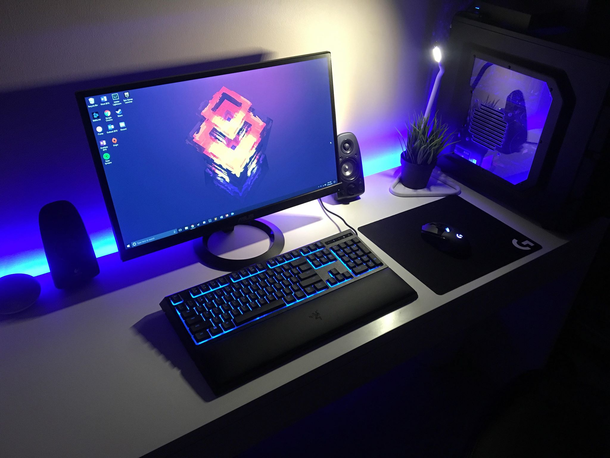

Hobbies and Interests
Ben enjoys spending time with his family and friends. He lives with his two parents, Richard and Jo, and his two brothers, Matt and Jack. Ben also has a Black Labrador named Tessa, and a Girlfriend, Georgia. He also enjoys spending time out with his friends, as well as extended family.
In his spare time, Ben enjoys playing computer games on his custom built PC. Games he frequently plays include Fortnite, Overwatch, Counter Strike: Global Offensive, and Call of Duty. He usually plays these games online, with either friends he knows in person, or strangers online. Ben has spent the last few years making additions to his ever growing desk set up, and his PC, witch is powered by a GTX 770 and an i7 2600K. He is a big fan of keeping a neat desk, and using periferals with RGB lightig, to add to the aesthetic appeal of his setup.
Ben has had an interest in Photography ever since he started in Highschool. Starting off, he shot his photos on a iPhone 4. Eventually, he began to use his parents Nikon D5100 DSLR camera with interchangable lenses, in order to increase the quality of his images. Over the years, Ben became more and more knowlagable with camera and editing techniques, and eventually ended up being paid to take photos of the Frankston Dolphins football club. Ben's panoramic landscape photography was featured in the 2017 Peninsula Student Art Gallery.